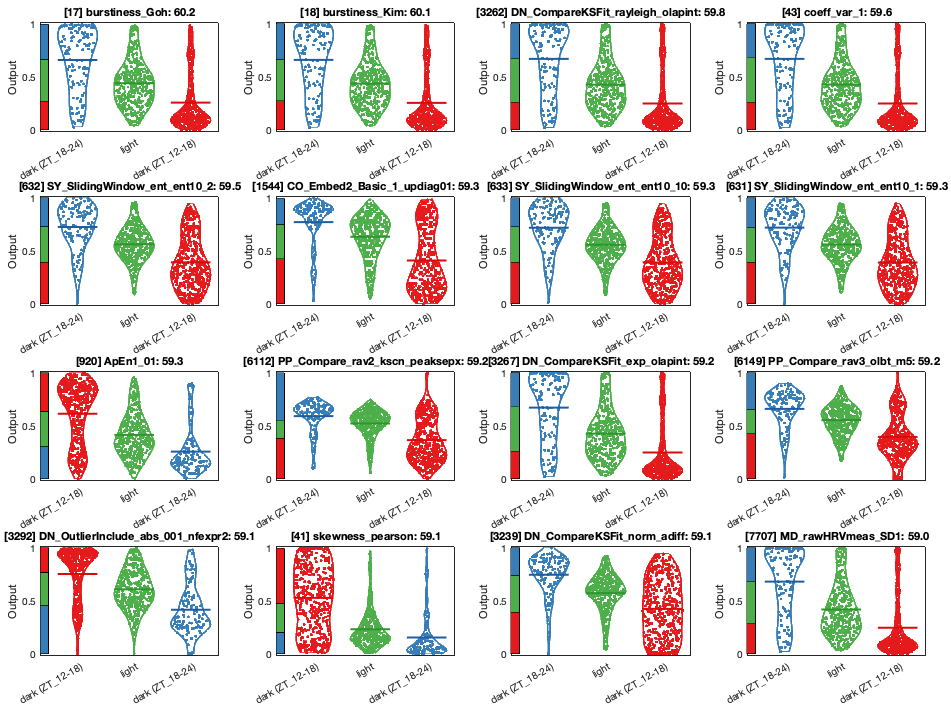
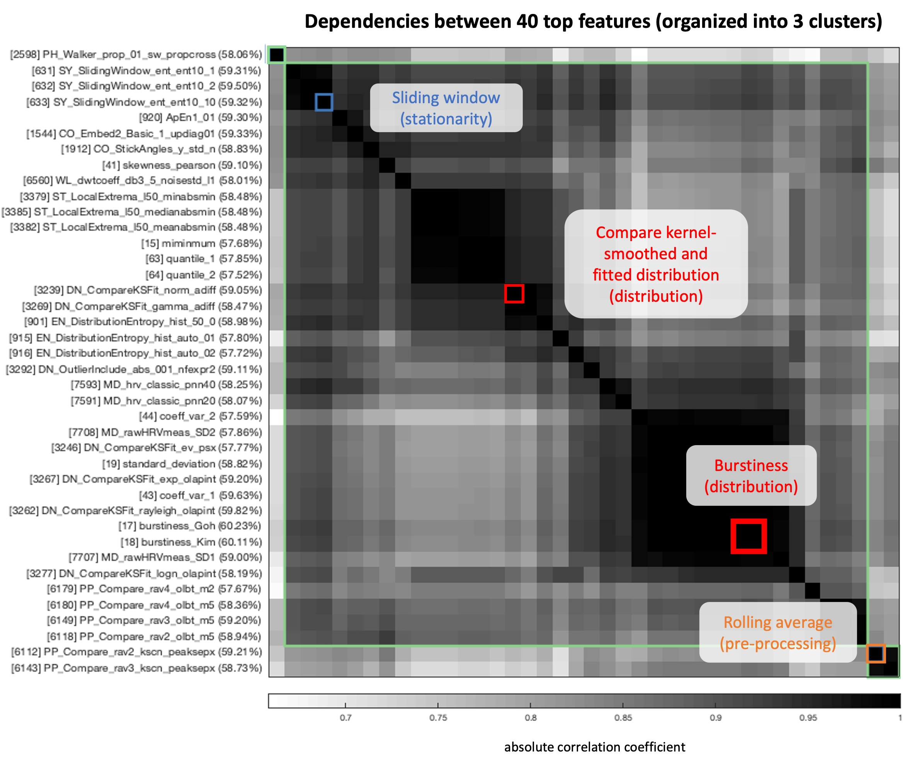

3. Results
3.1 Exploratory Analysis
3.1.1 Patterns of each Variable
There are six variables of interest after processing of Ethoscope data: mean velocity of locomotion, x coordinate of the oval mask centre, normalised phi angle as well as the width w, height h, and area of the mask. To intuitively look for potential characteristics of each variable, the mean and confidence interval of variable value averaged over 210 fly recordings were computed and plotted over time (Figure 3). Figure 3A shows that mean velocity is highly cyclical, which is expected as the Drosophila activity level follows a circadian rhythm. Fly with a velocity value under 1 is considered to be immobile, and long periods of immobility (i.e., sleep) are typically observed during the mid-day (hour 2-9) and early-night (hour 14-18). Interestingly, the x and phi variables also display a similar pattern that has lower mean values at these sleep periods (Figure 3B & 3C), although the corresponding degree of uncertainty is much higher. For w, h and area, a sudden change in value when switching to dark is seen (Figure 3D & 3E & 3F). This could be the result of a technical defect as the camera becomes less capable of detecting fly boundaries in dim lighting. The overall area may be larger during night than day due to this problem.
Figure 3A. Mean Velocity of Movement Over Time. The central red line is the mean velocity averaged over all flies. The upper and lower bounds represent the confidence interval. Time spent in dark conditions are highlighted in grey.
Figure 3B. X Position Over Time. The central red line is the mean velocity averaged over all flies. The upper and lower bounds represent the confidence interval. Time spent in dark conditions are highlighted in grey.
Figure 3C. Phi Angle Over Time. The central red line is the mean velocity averaged over all flies. The upper and lower bounds represent the confidence interval. Time spent in dark conditions are highlighted in grey.
Figure 3D. Width of Oval Mask Over Time. The central red line is the mean velocity averaged over all flies. The upper and lower bounds represent the confidence interval. Time spent in dark conditions are highlighted in grey.
Figure 3E. Height of Oval Mask Over Time. The central red line is the mean velocity averaged over all flies. The upper and lower bounds represent the confidence interval. Time spent in dark conditions are highlighted in grey.
Figure 3F. Area of Oval Mask Over Time. The central red line is the mean velocity averaged over all flies. The upper and lower bounds represent the confidence interval. Time spent in dark conditions are highlighted in grey.
3.1.2 Classifying Set Periods in Mid-day and Early-night
Previous studies have shown that the Drosophila brain activity level is lower during night-time sleep than day-time sleep 1, suggesting that deeper sleep stages are more likely to occur during the night. To exploratively investigate whether our multivariate data reflects this hypothesis, time series were extracted from specific times during the mid-day and early-night for HCTSA analysis. Initially, 20-min periods were taken and subjected to feature extraction, but over 30% of HCTSA operations were not able to yield good-quality features as most operations were designed for analysing longer time series. Therefore, 60-min periods were taken from hour 6-7 (mid-day) and hour 13-14 (early-night), and they were labelled as ‘light’ and ‘dark’ accordingly. Since HCTSA only supports single-variable analysis, a HCTSA computation was done for each of the mean velocity, x, phi and area variables, producing four different feature matrices. Three different classifiers were used: linear support vector machine (SVM), decision tree, and K-nearest neighbours (kNN) (Table 1). SVM consistently yielded the highest classification accuracy amongst the three. Of the four variables included, mean velocity and area time series are the most distinguishable between the two time periods. However, the high classification rates for area may be due to bias in image recognition, and so only the mean velocity is considered.
| Mean Accuracy of 10-fold Classification | |||
|---|---|---|---|
| Variable | SVM | Decision Tree | kNN |
| mean velocity | 73.91% | 68.15% | 69.53% |
| x | 67.89% | 62.86% | 59.21% |
| phi | 60.91% | 57.97% | 57.35% |
| area | 74.86% | 71.97% | 67.48% |
3.2 Sleep Data Curation
3.2.1 Identifying Sleep Sessions
Sleep can not only occur during mid-day and early-night but also at any time throughout the day. It would therefore be useful to robustly define and extract sleep sessions from the data for a more stringent analysis. Initially, the five-minute rule 2 was applied to identify sleep, where periods of at least five continuous minutes of inactivity are labelled as asleep. However, using this metric alone to extract sleep sessions for time series analysis has two limitations: 1) successive inactive periods may be disrupted by short bursts of activities, resulting in fragmented sleep periods and hence fewer time series data of at least 60-min available for HCTSA feature extraction, 2) it could potentially filter out lighter sleep stages, and the remaining mean velocity time series would inherently all have little fluctuations, making it difficult to distinguish between them.
To overcome these limitations, another metric for defining sleep sessions was developed. In addition to the five-minute rule, short bursts (≤ 5min) of activities are allowed between inactive sleep periods and are still labelled as asleep. This allows longer periods of sleep to be extracted for HCTSA analysis and classification. Examples of the time series produced are shown in Figure 4. It can be seen that bursts of activity occur periodically during both day-sleep and night-sleep, and nuances between the two are searched for using HCTSA analysis.
Figure 4. Snippets of Time Series Extracted for HCTSA Analysis. 10 time series for each of the two classes was randomly selected and plotted over time. Note, the y range of the time series is normalised to be between 0-1 and does not represent the absolute values.
3.3 Classifying Sleep at Different Parts of the Day
3.3.1 Two-class classification
Sleep sessions that are at least 60-min long were selected from mean velocity data, and the first 60-min of which were extracted. This is to allow all time series to be the same length so that classification would not rely on length-dependent features but on more intrinsic properties. A total of 991 time series (M=991) were produced; 388 of which are day-time sleep and 603 of which are night-time sleep, and they were labelled as ‘light’ or ‘dark’ accordingly. HCTSA successfully computed 5202 features (N=5202) on each time series. Thus, a 991 x 5202 (M x N) feature matrix was generated for this two-class data. Classification on the full feature space using a 10-fold linear SVM classifier yielded a mean balanced accuracy of 73.01%.
To visualise and examine the feature space, dimensionality reduction algorithms including principal component analysis (PCA) and t-distributed stochastic neighbour embedding (t-SNE) were employed. Two-dimensional representations by the two methods are shown in Figure 5. Additionally, a linear SVM classification was performed on each dimensional space, and the individual and combined classification accuracies are indicated on the axis. In the PCA plot, time series data for night-time sleep (red dots) are more spread out than those for day-time sleep (blue dots) (Figure 5A). Interestingly, night-time sleep data embedded by t-SNE follows a bimodal distribution to some degree, with one of the peak positions being similar to that for day-time sleep data (Figure 5B). This provides the first evidence that two types of sleep may exist: one occurs mostly at night and the other can occur at both day and night.
Figure 5. Low Dimensional Representations of the Feature Space for the Two-Class Problem. A) 2D principal component analysis (PCA) plot for the normalised feature space. Data points are coloured by the two class labels. A 1D plot for each principal component (PC) is also included. Linear SVM classifications are performed on the reduced space. In each axis label, the proportion of variance explained by the PC and the raw classification accuracy are provided in parentheses. Combined accuracy for the 2D space is indicated in the plot title.
Figure 5. Low Dimensional Representations of the Feature Space for the Two-Class Problem. B) 2D t-distributed Stochastic Neighbour Embedding (t-SNE) plot for the normalised feature space. Data points are coloured by the two class labels. A 1D plot for each t-SNE component is also included. Linear SVM classifications are performed on the reduced space. In each axis label, the proportion of variance explained by the t-SNE component and the raw classification accuracy are provided in parentheses. Combined accuracy for the 2D space is indicated in the plot title.
To investigate whether classification is driven by certain types of features, HCSTA features were divided into subsets based on the type of properties they measure and then compared by the accuracies of linear SVM classification (Figure 6). Notably, location- and spread-dependent features yielded the highest accuracies. Location-dependent features are those that change under mean shifts of a time series, while spread-dependent features are those that change under rescaling about their mean 3. Both types describe basic statistics of the distribution of time series. This indicates that the differences between day-time sleep and night-time sleep may be explained by simple features rather than complex dynamical properties of the time series.
Figure 6. Comparison of Feature-Set Dependence for the Two-Class Problem. Subsets of the HCTSA features were extracted based on the types of analysis they conduct. Linear SVM classification was then performed on each subset of features and on the subset-excluded sets, and their balanced accuracies were compared with that of the full feature set ('all').
Next, each of the 5202 features was individually assessed for their ability to separate the two labelled classes using linear SVM classification. The performance distribution was compared to a set of randomized null features to evaluate the statistical significance of the result (Figure 7). It is shown that only a relatively small number of features yield high classification accuracies.
Figure 7. Distribution of Accuracies across all features. The histogram represents real distribution of accuracies. Red dashed line indicates the classification accurarcy of a set of randomized null features. Blue dashed line indicates the mean accuracy of the real feature set.
The 16 most discriminative features and their class distributions are visualized in Figure 8. The ‘dark’-labelled data of several features, including [894] EN_DistributionEntropy_raw_ks, [6141] PP_Compare_rav3_kscn_adiff and [6253] PP_Compare_resample_2_1_swms, have exhibited the bimodal distribution that was observed in the previous t-SNE plot (Figure 5B). It can be more clearly seen from these features that the data are roughly organised into two clusters, one containing almost exclusively ‘dark’ labels and the other containing both ‘dark’ and ‘light’ labels.
Figure 8. Top 16 Features for the Two-Class Problem. Each subplot shows the normalised class distribution of a feature. The title of each subplot includes the corresponding feature name, operation number, and classification accuracy.
3.3.2 Three-class classification
Referring back to the mean velocity over time plot in Figure 3A, low-activity periods also occur during late-night (hour 20-22) but with higher average velocities than early-night sleep. It is therefore hypothesized that the two clusters seen for night-time sleep data may attribute to differences in early-night and late-night sleep. Therefore, the same dataset used in section 3.3.1 were re-labelled with ‘light’, ‘dark (ZT_12-18)’ and ‘dark (ZT_18-24)’. The numbers of time series data for each class are 388, 477 and 126, respectively, indicating that sleep takes place predominately during the first part of the night. Three-class classification using linear SVM was performed on the 991 x 5202 feature matrix, yielding a mean balanced accuracy of 58.65%. A confusion matrix was created and visualised to determine how well the labels are distinguished from one another (Figure 9). It is shown that ‘dark (ZT_12-18)’ and ‘light’ are well-discerned with true-positive rates over 70%, but ‘dark (ZT_18-24)’ is much more ambiguous.
Figure 9. Confusion Matrix for the Three-Class Problem. Each cell contains the number of observations made. Diagonal cells represent the correctly predicted observations which have blue colours. Row summary on the right calculates the percentage of correctly predicted observations over the total number of cases in a class, indicating the raw classification accuracy for each class.
Low-dimensional embedding of the three-class feature space are visualized in Figure 10A & 10B. In contrast to classification on the full feature space, ‘dark (ZT_18-24)’ data seems to be discriminable from the other two classes in low-dimensional space according to distributions in the first components of PCA and t-SNE.
Figure 10. Low Dimensional Representations of the Feature Space for the Three-Class Problem. A) 2D principal component analysis (PCA) plot for the normalised feature space. Data points are coloured by the three class labels. A 1D plot for each principal component (PC) is also included. Linear SVM classifications are performed on the reduced space. In each axis label, the proportion of variance explained by the PC and the raw classification accuracy are provided in parentheses. Combined accuracy for the 2D space is indicated in the plot title.
Figure 10. Low Dimensional Representations of the Feature Space for the Three-Class Problem. B) 2D t-distributed Stochastic Neighbour Embedding (t-SNE) plot for the normalised feature space. Data points are coloured by the three class labels. A 1D plot for each t-SNE component is also included. Linear SVM classifications are performed on the reduced space. In each axis label, the proportion of variance explained by the t-SNE component and the raw classification accuracy are provided in parentheses. Combined accuracy for the 2D space is indicated in the plot title.
Each feature is individually assessed, and class distributions of the top 16 performing features are visualised in Figure 11A. Distributions of the two ‘dark’ classes are noticeably segregated, and ‘dark (ZT_12-18)’ data points are mostly found in one cluster. This confirms the hypothesis that night-sleep patterns are different between early- and late-night. In addition, most of these features produced similar distributions, with ‘dark (ZT_18-24)’ having the highest mean and ‘dark (ZT_12-18)’ the lowest. To understand the similarities between top features, a pairwise correlation matrix was computed for the top 40 features (Figure 11B). The matrix was clustered by the absolute correlation coefficient values, leading to only 3 clusters. Hence, these features are largely related to each other and measure similar properties of the time series. The most representative features based on classification performance and feature dependency are: [17] burstiness_Goh, [3262] DN_CompareKSFit_rayleigh_olapint, [632] SY_SlidingWindow_ent_ent, and [6112] PP_Compare_rav2_kscn_peaksepx.

Figure 11A. Top 16 Features for the Three-Class Problem. Each subplot shows the normalised class distribution of a feature. The title of each subplot includes the corresponding feature name, operation number, and classification accuracy.

Figure 11B. Pairwise Dependencies between Top 40 Features for the Three-Class Problem. Operation number, feature name and classification accuracy are shown on the left. Green boxes indicate clusters of highly correlated features. Other coloured boxes highlight representive features, labelled with the name and type of property they measure.
Lastly, the four representative features are individually inspected to understand in detail how each assigns values to time series (Figure 12). For each feature, the operation was run on un-normalised time series (rather than the unit interval normalized values in the HCTSA feature matrix) to produce a distribution plot of the actual outputs. Keywords that describe the type of property the feature measures are indicated in the plot title. Snippets of time series ordered by the output values are also plotted to help interpret how the classes are distinguished.
Figure 12. Single Feature Analysis for the Three-Class Problem. A) Distributions of raw burstiness values for the three classes and overall data are plotted on the left. Snippets of time series ordered by the output values are shown on the right.
Figure 12. Single Feature Analysis for the Three-Class Problem. B) Distributions of raw values obtained by comparing kernal-smoothed and fitted distribution of time series are plotted on the left. Snippets of time series ordered by the output values are shown on the right.
Figure 12. Single Feature Analysis for the Three-Class Problem. C) Distributions of raw values obtained by applying a sliding window to time series are plotted on the left. Snippets of time series ordered by the output values are shown on the right.
Figure 12. Single Feature Analysis for the Three-Class Problem. D) Distributions of raw values obtained by comparing rolling averaged time series are plotted on the left. Snippets of time series ordered by the output values are shown on the right.
[17] burstiness_Goh and [3262] DN_CompareKSFit_rayleigh_olapint are both location- and spread dependent features that measure time series distribution, and their resulting plots are extremely similar (Figure 12A & 12B). [632] SY_SlidingWindow_ent_ent is a measure of stationarity which slides a window along the time series, calculates the distribution entropy of each window and outputs an overall histogram entropy value (Figure 12C). Therefore, it is also a measure of distribution and is highly correlated to [17] burstiness_Goh. On the other hand, [6112] PP_Compare_rav2_kscn_peaksepx is a combination of [3262] DN_CompareKSFit_rayleigh_ olapint and [632] SY_SlidingWindow_ent_ent, which applies a running average transformation (window length = 2) to the time series and quantifies differences between the kernel-smoothed and fitted distribution of the processed data (Figure 12D). As a result, all four operations evaluates similar properties of the time series. Of which, [17] burstiness_Goh produces the highest classification accuracy and so is considered for further interpretation in the Discussion page.
-
van Alphen B, Yap MHW, Kirszenblat L, Kottler B, van Swinderen B. A Dynamic Deep Sleep Stage in Drosophila. J Neurosci. 2013 Apr 17;33(16):6917–27. ↩
-
Cirelli C, Bushey D. Sleep and wakefulness in Drosophila melanogaster. Ann N Y Acad Sci. 2008;1129:323–9. ↩
-
Fulcher BD, Little MA, Jones NS. Highly comparative time-series analysis: the empirical structure of time series and their methods. J R Soc Interface. 2013 Jun 6;10(83):20130048. ↩